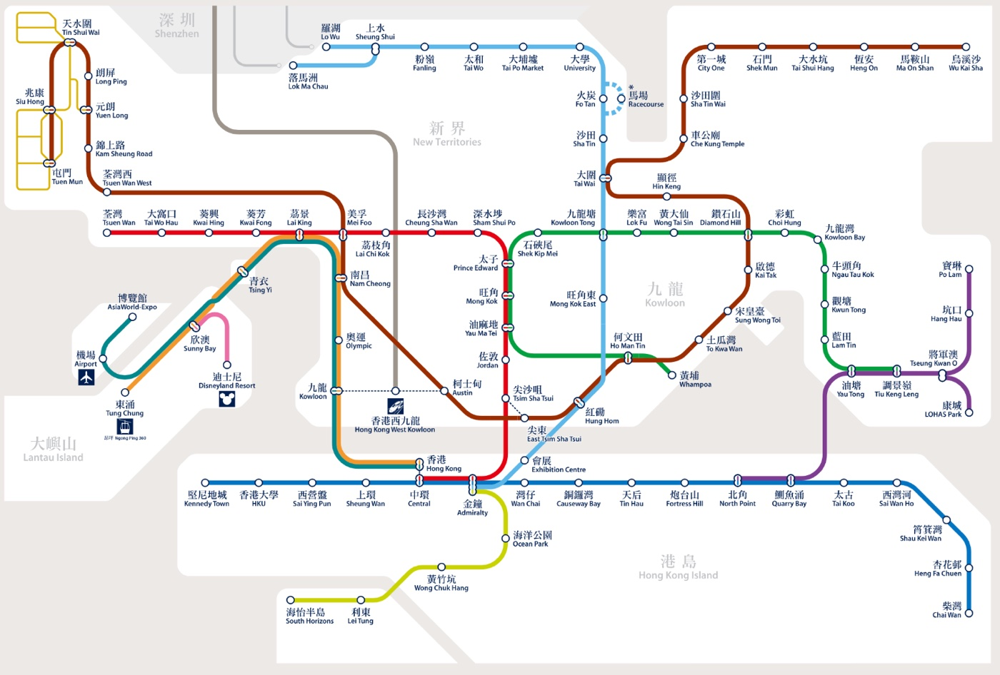
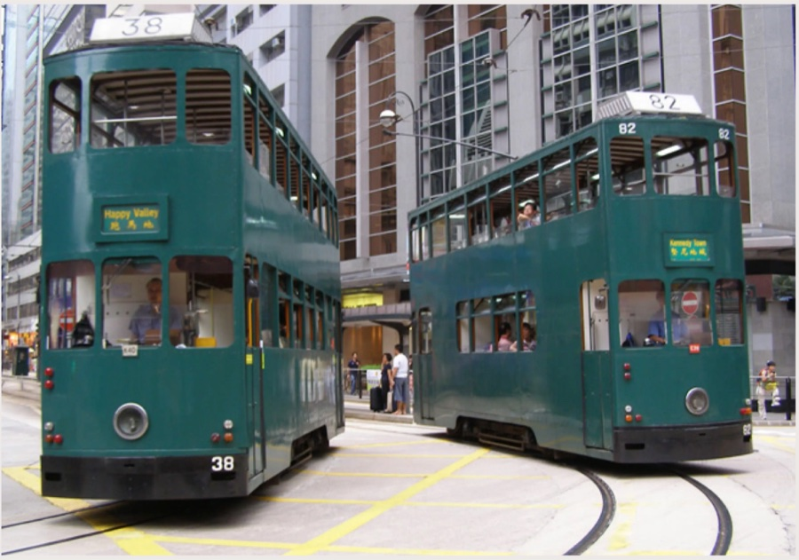
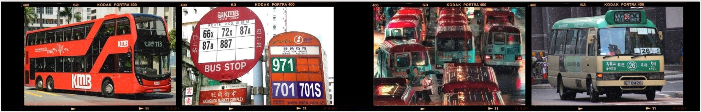
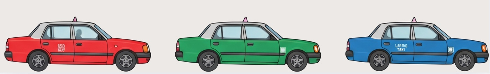

Getting Around Hong Kong: A Student Guide to Public Transport
Transportation in Hong Kong is well developed, and every part of the city is accessible with some form of transport. This guide brings together everything you need as an exchange student: the Octopus card, the MTR, the ding ding trams, buses and minibuses, and taxis.
Which transport for which trip
| Transport | Best for | Pay with |
|---|---|---|
| MTR | Fast trips across the city | Octopus |
| Tram (ding ding) | Cheap, scenic rides on Hong Kong Island | Octopus, flat fare (HK$3.30) |
| Bus | Beaches, trails and residential districts | Octopus |
| Minibus | Places buses and rails don't reach | Octopus on many, cash on some |
| Taxi | Heavy luggage and late nights | Cash or the Uber app |
On this page: Octopus card · MTR · Ding dings (trams) · Buses and minibuses · Taxis
The Octopus card: Hong Kong's essential card
An Octopus card is essential for anyone visiting Hong Kong. It is the absolute lifeline of daily life, used for everything from subway fares and convenience store purchases to laundry machines. If you only sort out one thing before your first week, make it this one.
| Question | Answer |
|---|---|
| What is it? | A stored-value card used across Hong Kong |
| What does it pay for? | MTR, buses, trams, convenience stores, laundry machines and more |
| Which versions? | Physical card or online version |
| Where to top up? | MTR machines, customer service counters, convenience stores |
| Student version? | Yes, for students staying longer than a semester, through the link the university emails you |
Where you can use an Octopus card in Hong Kong
- Public transport. The MTR, buses, trams and many minibuses all take Octopus, and it's the fastest way to pass through the gates.
- Convenience stores and supermarkets. Tap to pay for snacks, drinks and groceries in seconds.
- Food shops. Many cafés and cha chaan tengs accept it, which is handy for a cheap breakfast.
- Laundry machines. This is the one that surprises most exchange students.
- Keep cash too. Some older shops and a few minibuses don't take Octopus.
Physical or online Octopus card: which to choose
You can either get a physical card or an online version.
- Physical card. It's simple, it works everywhere, and you can top it up at the machines in every MTR station.
- Online version. It's convenient if you'd rather pay from your phone than carry another card.
- Choosing. Pick the one that fits how you already pay for things, and make sure you know how to check your balance before your first journey.
How to top up your Octopus card
For topping up the physical card, machines are located at every MTR station. You can also top it up at the customer service counters or at convenience stores. Check your balance before you leave home, because running out of value at the gate is annoying when your train is about to leave.
How to get an Octopus card: first-week checklist
- Look for the university's email with the student Octopus link, and apply as early as you can.
- Get a physical card from an MTR customer service counter if you want one before your student card arrives.
- Top it up at an MTR machine or a convenience store before your first journey.
- Tap in and out at the MTR gates, and tap the reader when you board a bus.
- Keep an eye on your balance, so you always have enough for the trip home.
How to get a student Octopus card
For students staying more than one semester, there is a student Octopus card. You can get it through the link the university provides, which they'll send to you by email.
- Check your inbox after you've been accepted, because the link arrives by email.
- Apply early, so you have the card as soon as possible.
- Benefits. With a student Octopus, you unlock special public transport fare concessions across MTR lines, which makes city-wide travel significantly cheaper.
How to collect the Hong Kong public transport fare subsidy
If you have a normal Octopus card, you can collect a return on your transport spending once you pass the monthly threshold of HK$500. You can collect 30% of your spending above the threshold. Collection opens on the 16th of every month, and you can collect retroactively for the past three months. The machines are light blue and located at almost every station. The closest machine is at Kowloon Tong, near Exit H, or for Ma On Shan residents, next to the MTR exit on the way to the dorm. Check the current rules before you rely on it.
UnionPay Octopus card for mainland China travel
Be mindful about your travel plans. If you want to go to the mainland, it's highly recommended to get a UnionPay Octopus card. See our travel guide for more advice on payments across the border.
Octopus card tips for students
- Plan with apps. The official MTR app shows the best exits for your destination, HKeMobility shows live traffic news, and Google Maps covers basic routes.
- Top up before rush hour, so you avoid queues at the machines.
- Don't let it run empty. A low balance at a gate or a bus fare box is the most common first-week problem.
- Keep it safe. Put it in a card holder or a phone case, away from your wallet, so it doesn't tap by accident.
- Ask at the counter. If something looks wrong with your card, the customer service counters at MTR stations can help.
Hong Kong MTR (Mass Transit Railway): your best friend
The Hong Kong metro system is efficient, clean and super convenient. It avoids traffic entirely, and even rush hour is acceptable.
How to ride the Hong Kong MTR like a local
- Follow the signs and staff. Pay attention to the platform signs, because the staff help run the system smoothly.
- Choose your car. Digital boards on the platform show how crowded each car is. They also point out the ideal interchange stations, so you can walk to the other side of the platform to change lines without crossing the whole station.
- Travel late. Trains run frequently from early morning until past midnight, and they connect New Territories campuses straight to the nightlife districts on Hong Kong Island in under an hour.
- Use the right exit. Big stations have many exits, so check the best one for your destination in the MTR app before you leave the platform.
- Follow the rules. Don't eat or drink in the paid area, and stand to one side on escalators so others can pass.
Pay with your Octopus card. For the route from Kowloon Tong station to your classroom, see From Kowloon Tong MTR to CityU.

Ding dings: how to ride the historic Hong Kong trams
Trams operate strictly on Hong Kong Island. These historic double-decker trams are slow compared to the MTR, but they cost next to nothing and offer an incredible, scenic view of the city streets.
How to ride the Hong Kong tram, and what it costs
- Hop on at the back.
- Go up the stairs to the upper deck and take a front-row seat for the best views.
- Pay a flat, budget-friendly fare (HK$3.30) with your Octopus card when you step off at the front exit, next to the driver.
Use the tram when you want sightseeing, and the MTR when you want speed.

Buses and minibuses in Hong Kong
Extensive franchised bus routes cover remote beaches, mountain trails and residential districts that rails don't reach.
Hong Kong double-decker buses: paying with Octopus
- Octopus. Regular double-decker buses accept Octopus cards.
- Route displays. Buses feature digital route displays, so you can follow where you are.
- Good for. Beach days, hikes and anywhere the MTR doesn't go.

How to take a minibus in Hong Kong (and how to get off)
Green and red minibuses require a bit more local confidence. You often have to shout out your desired stop, in Cantonese or English, before you press the buzzer. It's an authentic rite of passage for new arrivals.
The phrase to learn is “Yau lok, m goi!” It means “I'm getting off, please!” With this, you're all set to enjoy the hectic drive.
- Bring cash. Some minibuses don't take Octopus.
- Hold on. Minibuses move fast, so sit down if you can and hold on.
Night buses in Hong Kong after the MTR closes
When the MTR stops running for the night, a few overnight bus routes keep going, so you can still get home cheaply after a night out. Night routes come less often than daytime buses, so look up the next departure before you leave, and keep taxi money as a back-up.
Hong Kong taxis: the real lifesavers
Taxis are readily available and affordable compared to Western standards. They're a lifesaver when you're carrying heavy luggage or heading home late after a night out.
Red, green and blue taxis in Hong Kong: what the colours mean
- Red taxis operate in urban areas.
- Green taxis operate in the New Territories.
- Blue taxis operate on Lantau Island.
Split the fare. Sharing with friends makes a late-night ride much cheaper per person.
Pay with cash or through the Uber app.

FAQ
- Do I need an Octopus card in Hong Kong?
- Yes. It works on almost all public transport and in many shops, and the UnionPay version is good for travels to the mainland and Macao.
- How much does the Hong Kong tram cost?
- The ding ding has a flat fare of HK$3.30, paid with your Octopus card when you step off at the front.
- How do I get off a minibus in Hong Kong?
- Call out “Yau lok, m goi!” or press the buzzer before your stop.
- What do the taxi colours mean in Hong Kong?
- Red taxis operate in urban areas, green taxis in the New Territories and blue taxis on Lantau Island.